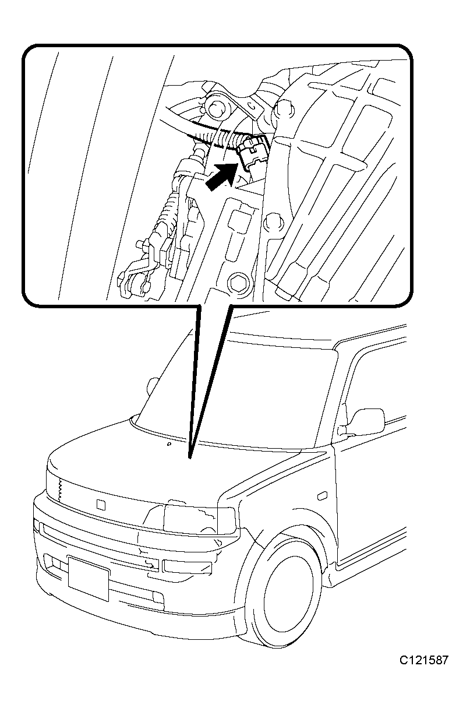

Manual Shifting Test
WARNING: This page is about a different variant/trim than selected.
- MANUAL SHIFTING TEST
HINT:
- Through this test, it can be determined whether the trouble occurs in an electrical circuit or if it is a mechanical problem in the transaxle.
- If any abnormalities are found in the following test, the problem is in the transaxle itself.
- Disconnect the connector of the transmission wire.
HINT:
It is possible to deactivate the electrical shift control by disconnecting the transmission wire. The gear positions can then be changed mechanically with the shift lever.
- Drive with the transmission wire disconnected.
Move the shift lever to each position to check whether the gear position changes as shown in the table below.
SHIFT LEVER POSITIONShift Lever Position Gear Position D 3rd 2 3rd L 3rd R R P P 
Courtesy of © TOYOTA, LICENSE AGREEMENT TMS1002HINT:
If the gear positions L, 2 and D are difficult to distinguish, do the following ROAD TEST. If any abnormality is found in the above test, the problem is in the transaxle itself.
- Connect the connector of the transmission wire.
- Clear the DTC (see DTC CHECK / CLEAR ).